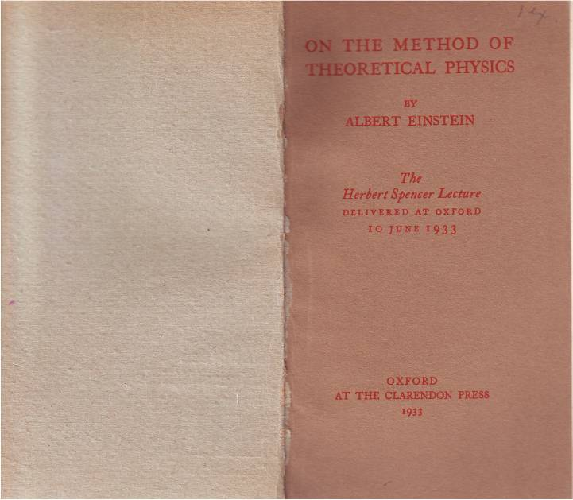
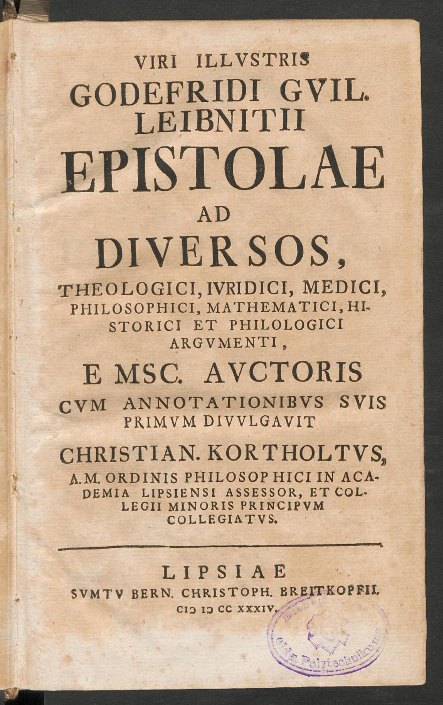
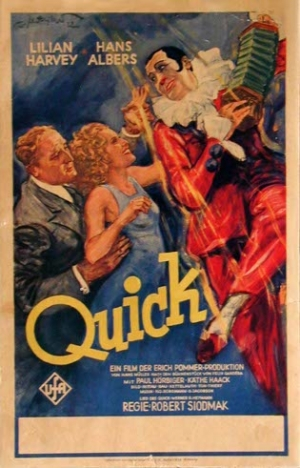
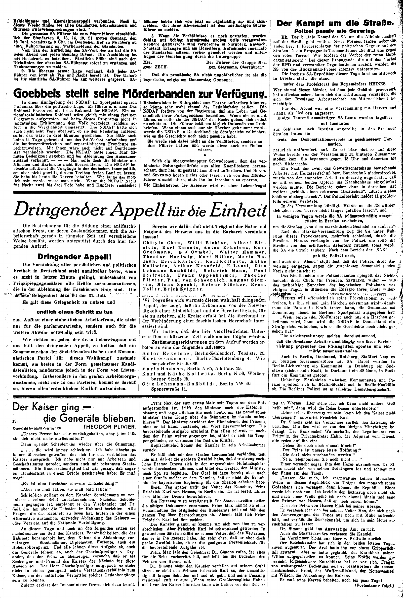
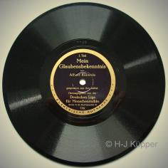
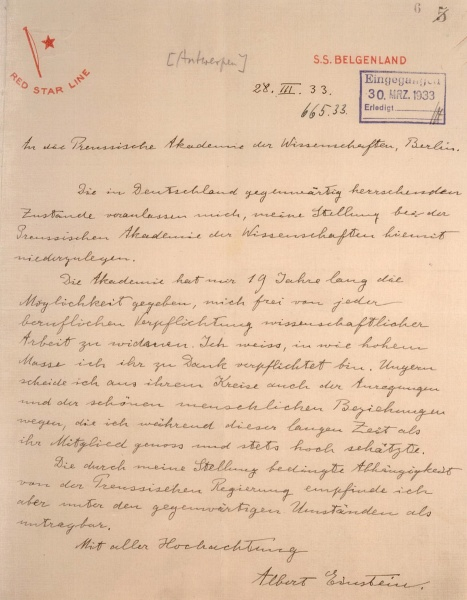
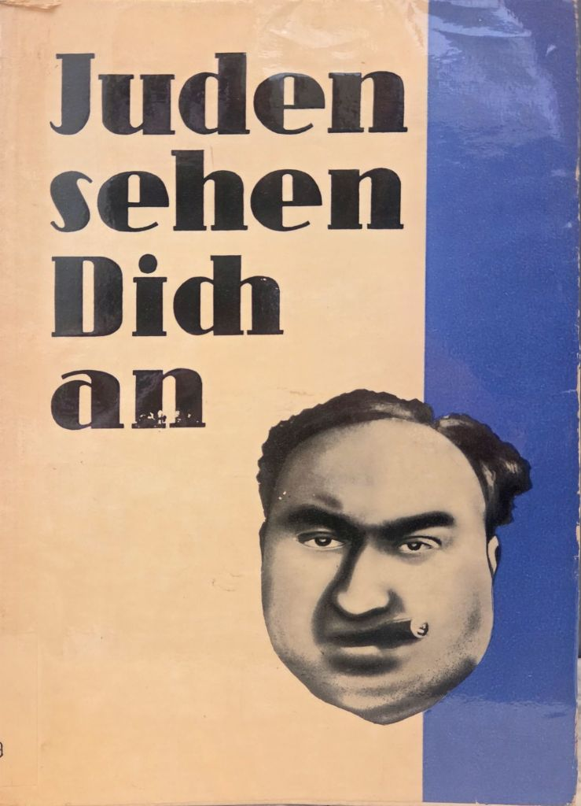

1:14:29 · 9 OPERE
Albert Einstein (Teil 1): Der Letzte Sommer.
Il filo del discorso
La prima parte del film televisivo di Georg Schiemann segue Einstein fra l’ultima estate tedesca e l’esilio del 1933. La ricerca sul campo unificato, la vita nella casa di Caputh e l’offerta americana di Abraham Flexner si intrecciano alla crescente ostilità antisemita. Il confronto con Stark porta dentro la comunità scientifica il progetto di una fisica definita per razza; il personaggio Einstein difende invece la validità degli argomenti e la responsabilità pubblica dello studioso.
Leggi la sintesi completaRiduci la sintesi
Il film affida a Rolf Schnittke e alla sua famiglia il conflitto fra lavoro, sicurezza economica e adattamento al potere. Elsa, Margot e il personaggio Tabea Mandel introducono la sfera affettiva, senza ridurre il protagonista alla sola figura del genio. L’appello antifascista, la scena di registrazione del Credo, il passo di Pascal e le dimissioni dall’Accademia collegano la finzione a testi e documenti riconoscibili. Nel Belgio dell’esilio il pacifismo viene messo in discussione dalla possibilità concreta dell’aggressione nazista. La scheda mantiene distinti dialoghi interpretati e prove storiche, distingue il film DDR 1989–1990 dall’omonimo 1984 e non anticipa la seconda parte dell’opera.
I libri nel discorso

Albert Einstein (film televisivo in due parti)
Note sul riferimento
Copertina: DDR TV-Archiv · Große Geschichten 60 · 2 DVD ·18 maggio 2012
Copertina autentica dell’edizione DVD comprendente Der letzte Sommer ed Eine Formel explodiert. Illustra il film di Schiemann con Abolins; non la serie 1984 né un libro su Einstein. L’edizione DVD è successiva al film e non identificata come sorgente del caricamento YouTube.
Il film stesso costituisce la fonte del video: prima parte Der letzte Sommer, opera di Georg Schiemann, DDR 1989–1990. Identità controllata su titolo, personaggi e catalogo DFF; nessuna seconda parte aggiunta come letta. Parte citata: Der letzte Sommer; una sola voce per l’opera in due parti.

On the Method of Theoretical Physics (Herbert Spencer Lecture)
Identificazione probabile
Note sul riferimento
Pagina di titolo dell’opuscolo inglese, Clarendon Press 1933 · copia BCU Iași; edizione del filmato non accertata: On the Method of Theoretical Physics, The Herbert Spencer Lecture, delivered at Oxford 10 June 1933; Oxford, At the Clarendon Press, 1933. Copia digitalizzata dalla Biblioteca Centrale Universitaria di Iași, segnatura IB-292.
Scansione autentica dell’apertura con il titolo dell’opuscolo inglese 1933: si vedono la pagina di titolo, l’interno della coperta adiacente e la filigrana della biblioteca. Non è un articolo Einstein–Mayer né un’edizione tedesca certificata nel filmato. La nota dell’opuscolo ringrazia Ryle, Page e Hurst per la traduzione inglese della conferenza scritta in tedesco; non si presume identità parola per parola fra le versioni.
Nel passaggio: 418.26–468.65 s: spinori di Dirac, nuovo campo quadridimensionale e semivettori. Il nucleo spinori/caso particolare/campo nuovo/continuo metrico 4D è collazionato con l’originale inglese 1933, pp. 13–14. La frase tedesca più estesa è documentata nella ricerca storica di Goenner; non è riscontrata direttamente nell’originale tedesco. Titolo della conferenza assente nel parlato.

Lettera a Christian Goldbach del 17 aprile 1712
Identificazione probabile
Note sul riferimento
Frontespizio della raccolta Kortholt, vol. I (1734); lettera del 1712: Frontespizio autentico del volume I della raccolta Epistolae ad diversos, a cura di Christian Kortholt, Lipsia, Bernhard Christoph Breitkopf, 1734. La lettera a Goldbach del 17 aprile 1712 vi compare come Epistola CLIV, pp. 239–242; formula sulla musica a p. 241. È il frontespizio del contenitore storico, non la copertina della singola lettera o il suo manoscritto.
La data 1712 riguarda la lettera; 1734 è l’anno stampato sul frontespizio della raccolta digitalizzata. Nessuna edizione materialmente consultata dai personaggi o dagli sceneggiatori è identificata dal film.
Nel passaggio: 96 s: Leibniz è nominato, segue una parafrasi tedesca della musica come anima che conta senza esserne consapevole. Il destinatario e la data della lettera non sono pronunciati. Collazione sul latino della lettera CLIV, p. 241 della raccolta Kortholt 1734; data 17 aprile 1712 sul seguito p. 242.

Quick
Note sul riferimento
Copertina: DFF/DIF · locandina originale Quick 1932 · Lilian Harvey e Hans Albers
Locandina autentica della versione tedesca, con titolo, interpreti, marchio UFA e regia Robert Siodmak leggibili. Riproduzione archivistica originale intera, non fotogramma generico.
Quick con Hans Albers nei panni di un clown pronunciati dai personaggi; versione tedesca 1932 di Robert Siodmak, verificata in DFF e Murnau-Stiftung.

Dringender Appell! (Appello urgente,1932)
Identificazione probabile
Note sul riferimento
Copertina: Der Funke ·25 giugno 1932 · p 2 intera · archivio Friedrich-Ebert-Stiftung
Resa integrale della p 2 del giornale originale: appello nelle due colonne a sinistra, Einstein tra i firmatari e data 31 luglio leggibili. Sono presenti anche altri articoli della pagina, non attribuiti all’appello. La p 1 è stata vista per verificare la data.
Lettera/appello di Heinrich Mann e Käthe Kollwitz a SPD, KPD e sindacati per candidature comuni; probabile riferimento all’iniziativa 1932. Il manifesto pubblicato in Der Funke 25 giugno 1932 è distinto dalla lettera dei tre promotori e dalla replica 1933.

Pensieri
Identificazione probabile
Note sul riferimento
Copertina: UTET · a cura di Bruno Nacci · 2021
Copertina autentica dell’edizione di riferimento, non attribuita all’esemplare del video.
Brano tedesco sul corpo, i sensi, l’anima e gli spazi immensi che rinchiudono l’uomo: corrisponde ai Pensieri, frammento Lafuma 427/Sellier 681, nella lettera di Tabea. Titolo e autore non pronunciati, traduzione usata non identificata.

Mein Glaubensbekenntnis (Il mio credo)
Identificazione probabile
Note sul riferimento
Copertina: Mein Glaubensbekenntnis · disco in gommalacca originale · Deutsche Liga für Menschenrechte · riproduzione della prima facciata
Fotografia autentica del disco originale con etichetta leggibile, pubblicata dall’archivio del curatore. La busta originale è descritta come carta non stampata; non è una copertina libraria. La fotografia riporta il credito H.-J. Küpper, conservato integralmente.
Scena di registrazione con giustizia sociale, indipendenza e obblighi verso l’umanità: confronto testuale con Mein Glaubensbekenntnis, titolo non pronunciato e sequenza filmica rielaborata.

Lettera di dimissioni dall’Accademia prussiana delle scienze del 28 marzo 1933
Note sul riferimento
Copertina: BBAW · II-IIIa Bd. 28b, Bl. 5 · lettera originale su carta S.S.Belgenland ·28 marzo 1933
Pagina manoscritta originale intera: data 28 III 33, destinatario, testo delle dimissioni e firma Albert Einstein leggibili. Timbro di ingresso 30 marzo 1933 distinto dalla data della lettera. Non copertina di un volume biografico.
Lettera e rinuncia alla Preußische Akademie ricordate esplicitamente, con frase sulla dipendenza dal governo divenuta intollerabile; testo riscontrato nell’originale 28 marzo 1933 conservato in BBAW.

Juden sehen Dich an
Identificazione probabile
Note sul riferimento
Copertina storica di propaganda antisemita · esemplare ICZ D9019: Fotografia bibliotecaria della copertina di Juden sehen Dich an, Johann von Leers, NS.-Druck und Verlag, Berlin-Schöneberg, 1933 secondo la biblioteca ICZ/Breslauersammlung, esemplare D9019. Documento storico di propaganda antisemita: titolo e caricatura razzista sono riprodotti per identificazione critica, senza avallarli.
Immagine nativa739×1024 pubblicata dalla biblioteca con didascalia bibliografica specifica. Non è un frontespizio, una ricostruzione o una pagina del film. Il volto caricaturale non viene identificato come persona reale. Non prova la specifica edizione richiamata nella sceneggiatura.
A 4198.43–4209.96 s il personaggio parla di una brochure nazista con fotografie degli avversari e minaccia di impiccagione sotto quella dell’interlocutore rappresentato come Einstein. La trascrizione automatica contiene errori riconoscibili di trascrizione; non pronuncia titolo, autore, data o edizione.
Fonti e approfondimenti (13)
- Nobel Foundation · premio 1921, conferito 1922, effetto fotoelettrico ↗
- IAS · storia dell’istituto e nomina di Einstein annunciata 1932 ↗
- IAS · storia primaria delle trattative Flexner 1932 e apertura 1933 ↗
- BBAW · biografia e dimissioni del 28 marzo 1933 ↗
- Pascal · testo originale dei Pensieri 1670, pagina 88 ↗
- Edizione elettronica dei Pensieri · confronto del passo Lafuma 427/Sellier 681 ↗
- Bundesarchiv · filmografia e documenti originali Einstein ↗
- DHM · programma primario del 2005 che distingue le due parti del film ↗
- breslauersammlung.com ↗
- dspace.bcu-iasi.ro ↗
- link.springer.com ↗
- dbnl.org ↗
- e-rara.ch ↗